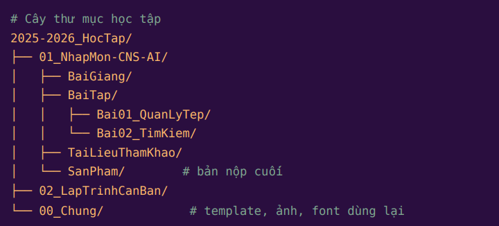

Hệ thống hóa kết quả học tập thành phần
Tối ưu hóa quản lý không gian lưu trữ số
Kỹ năng quản lý tệp tin và thư mục là nền tảng cốt lõi của năng lực số. Việc thiết lập một hệ thống phân cấp logic không chỉ giúp tiết kiệm thời gian tìm kiếm mà còn rèn luyện tư duy hệ thống. Trong bài tập này, tôi đã xây dựng cấu trúc lưu trữ dựa trên phương pháp quản lý thư mục theo tiền tố số học và phân nhánh cây đa tầng, đảm bảo tính bền vững cho khối lượng tài liệu khổng lồ trong suốt 4 năm đại học.
Nguyên tắc đặt tên đồng bộ
- Tuyệt đối không sử dụng tiếng Việt có dấu và khoảng trắng để tránh lỗi đường dẫn hệ thống.
- Áp dụng công thức tiêu chuẩn:
[MãMôn]_[TênTàiLiệu]_[NgàyThángNăm]_[PhiênBản]. - Sử dụng số thứ tự
01_,02_để cố định vị trí thư mục quan trọng lên đầu danh sách.

Truy xuất và thẩm định thông tin học thuật
Giữa kỷ nguyên bùng nổ thông tin và sự xuất hiện của các báo cáo do AI tự tạo (AI hallucinations), kỹ năng tìm kiếm nâng cao và thẩm định nguồn tin trở thành rào chắn bảo vệ liêm chính học thuật. Bằng việc phối hợp các toán tử Boolean logic, tôi đã thu hẹp hàng triệu kết quả rác để tiếp cận trực tiếp các báo cáo khoa học uy tín.
"artificial intelligence" AND ("higher education" OR "university") site:edu.vn filetype:pdf
Áp dụng bộ lọc CRAAP Test
| Tiêu chí đánh giá | Kết quả phân tích tài liệu |
|---|---|
| C - Currency (Tính cập nhật) | Tài liệu được xuất bản trong vòng 2 năm trở lại đây, đảm bảo các số liệu về công nghệ AI không bị lỗi thời. |
| R - Relevance (Độ phù hợp) | Nội dung đi sâu vào việc sinh viên ứng dụng AI, phục vụ trực tiếp cho đề tài nghiên cứu của bài tập nhóm. |
| A - Authority (Thẩm quyền) | Được đăng tải trên Cổng thông tin Tạp chí Khoa học ĐHQGHN, tác giả là các giảng viên có học hàm. |
| P - Purpose (Mục đích) | Mục tiêu truyền tải tri thức, hoàn toàn vắng bóng yếu tố quảng cáo thương mại hay định hướng chính trị cực đoan. |
Kỹ thuật "Prompt Engineering" trong học tập
Chất lượng đầu ra của Trí tuệ nhân tạo phụ thuộc hoàn toàn vào tư duy đặt câu lệnh (Prompt) của người dùng. Để loại bỏ hiện tượng AI trả lời chung chung, lan man, tôi đã áp dụng cấu trúc Prompt đa chiều bao gồm 4 yếu tố cốt lõi: Đóng vai (Persona) + Nhiệm vụ cụ thể (Task) + Bối cảnh (Context) + Ràng buộc định dạng (Format).
"Hãy giải thích về cách dùng AI trong đại học."
"Đóng vai một chuyên gia giáo dục số. Hãy liệt kê 3 phương pháp ứng dụng ChatGPT để sinh viên năm nhất tự học lập trình hiệu quả. Trình bày dưới dạng danh sách gạch đầu dòng, ngôn ngữ truyền cảm hứng, giới hạn tối đa 200 từ."
Vận hành không gian làm việc nhóm trực tuyến
Làm việc nhóm từ xa không chỉ đơn thuần là việc nhắn tin qua lại, mà đòi hỏi một quy trình quản trị chuyên nghiệp. Để giải quyết bài toán "trôi tin nhắn" và "lỡ deadline", nhóm chúng tôi đã đồng bộ hóa toàn bộ tiến trình công việc lên nền tảng quản trị dự án số hóa.
Bảng Kanban
Trực quan hóa khối lượng công việc thành các cột To-do, Doing, Done. Mọi thành viên đều biết ai đang làm gì vào thời điểm nào.
Đồng bộ Đám mây
Chỉnh sửa tài liệu cùng lúc (Real-time collaboration) trên Google Docs. Loại bỏ hoàn toàn việc phải gửi qua lại các file Word khác nhau.
Lịch sử Phiên bản
Lưu vết mọi thay đổi của từng cá nhân. Dễ dàng khôi phục lại các đoạn nội dung đã xóa nhầm chỉ bằng một cú click chuột.
Sáng tạo nội dung với sự trợ lực của AI Sinh tạo
Dự án này là cơ hội để tôi vượt qua giới hạn của các công cụ đồ họa truyền thống bằng cách đóng vai trò "Đạo diễn hình ảnh AI" (AI Art Director). Bức ảnh minh chứng dưới đây là kết quả của một chu trình Iterative Prompting - thử nghiệm và tinh chỉnh liên tục các câu lệnh mô tả chi tiết về phong cách nghệ thuật, ánh sáng, góc máy để AI kết xuất ra một ấn phẩm truyền thông độc bản.
Minh chứng: Sản phẩm AI (image_8cb1db.png)
Quy trình thực hiện số hóa:
Lên ý tưởng: Sử dụng LLM để phác thảo cốt truyện và các yếu tố thị giác đặc trưng cần có.
Thiết kế Prompt: Chuyển hóa ý tưởng thành bộ từ khóa chuyên ngành đồ họa (ví dụ: 8k resolution, cinematic lighting, cyberpunk aesthetic).
Hậu kỳ: Xuất file chất lượng cao, căn chỉnh lại màu sắc nhẹ nhàng để phù hợp với định dạng hiển thị web.
Triết lý sử dụng AI có trách nhiệm (Responsible AI)
Khi ranh giới giữa sản phẩm trí tuệ con người và thuật toán ngày càng mờ nhạt, việc xây dựng một hệ tiêu chuẩn đạo đức số cá nhân là điều sống còn. AI không thể gánh chịu trách nhiệm pháp lý hay học thuật thay cho sinh viên. Do đó, tôi đã thiết lập "Nguyên tắc 3T" áp dụng xuyên suốt quá trình học tập:
1. Trung Thực
Minh bạch 100% về mức độ can thiệp của AI. Khai báo rõ ràng các công cụ đã sử dụng, đoạn văn nào do AI hỗ trợ phác thảo ý tưởng, tuyệt đối không sao chép nguyên văn và nhận là của mình (tránh đạo văn).
2. Thẩm Định
Coi AI như một người trợ lý có thể mắc sai lầm. Mọi số liệu lịch sử, trích dẫn luật học hay công thức toán học do AI cung cấp đều phải được kiểm định chéo bằng giáo trình chính thống hoặc CSDL uy tín.
3. Thận Trọng
Bảo vệ quyền riêng tư cá nhân và dữ liệu tổ chức. Không chia sẻ mã sinh viên, tài liệu nội bộ của nhà trường hay các thông tin cá nhân nhạy cảm vào các khung chat của các mô hình ngôn ngữ công cộng.